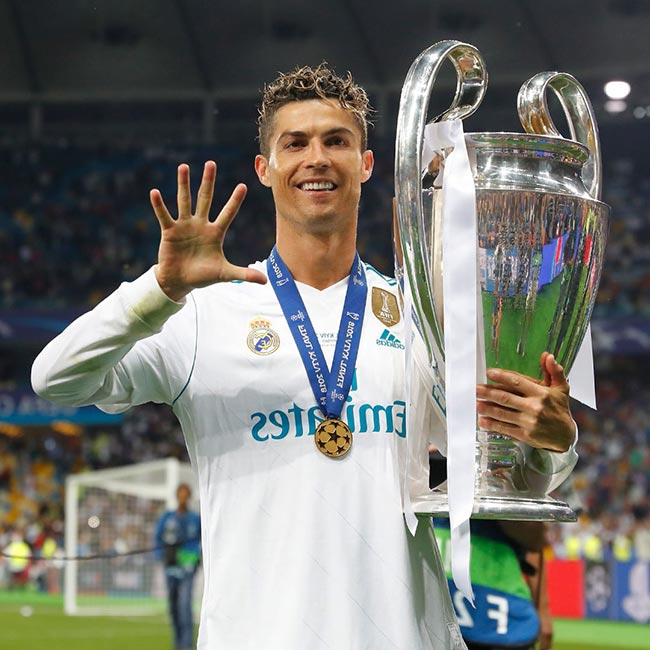

É capitão pela Seleção Portuguesa, onde conquistou a Eurocopa de 2016 e a Liga das Nações em 2018-19.
Em 2021, se tornou o atleta com mais golos na história do futebol em jogos oficiais, sendo
simultaneamente o jogador com mais golos na história a nível de seleções,
bem como a nível de clubes.

Ronaldo é geralmente considerado o melhor e mais completo futebolista,bem como o maior artilheiro do mundo
e na opinião da grande maioria dos especialistas do esporte, seus atributos físicos, suas habilidades goleadoras,
sua mentalidade vencedora, sua liderança e seu desempenho sob pressão, o tornam um dos melhores futebolistas de todos
os tempos,com alguns ainda o colocando como o melhor jogador de sempre. Futebolista histórico, foi eleito o
melhor jogador do mundo pela FIFA e pela France Football recebendo o prémio Bola de Ouro (que por um período passou
a denominar-se Bola de Ouro da FIFA) um total de cinco vezes: 2008, 2013, 2014, 2016 e 2017. Também venceu o prémio
Bota de Ouro da UEFA num total de quatro vezes. Ganhou três vezes o prémio de Melhor Jogador da UEFA na Europa e
uma vez o prémio de Melhor Jogador de Clubes da UEFA e em 2020 foi escalado no Dream Team da Bola de Ouro.
Foi eleito o jogador do século pela Globe Soccer Awards por diversos ex-jogadores, técnicos e dirigentes do futebol.
Além disso detém quase todos os recordes da Champions League,
bem como é amplamente considerado o maior jogador de toda história da competição.
Criado:Jhonatan